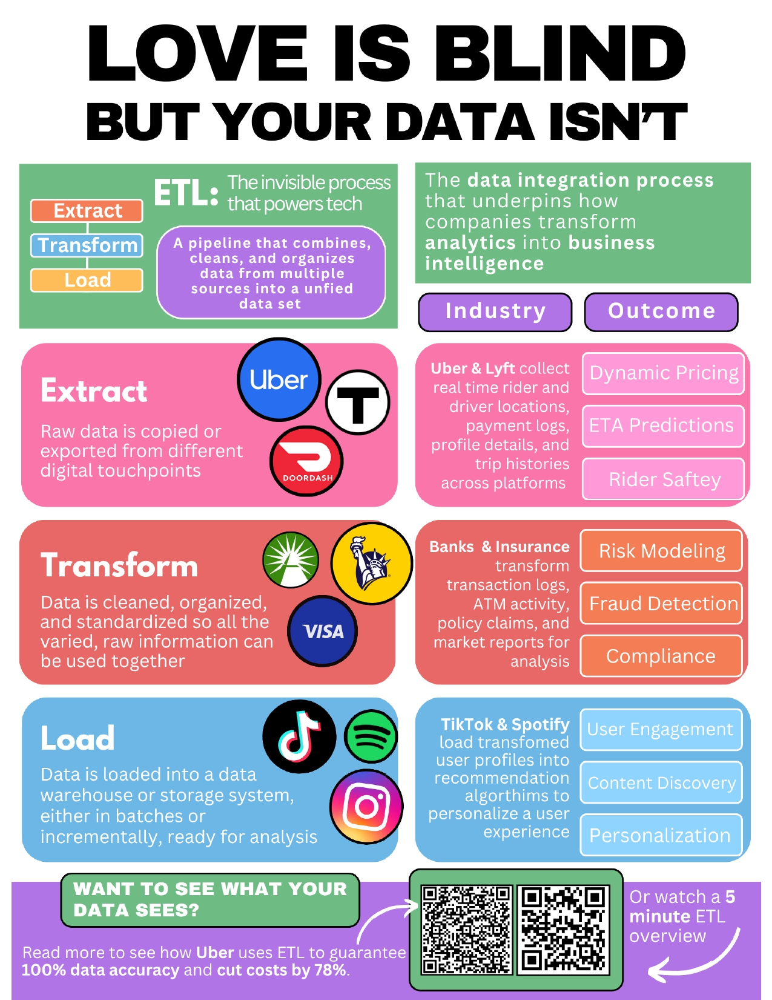

ETL is the invisible process that powers technology, and is the foundation to how data moves from different sources and gets cleaned into useful insights. Most people never consider how their apps work behind the scenes, but having a basic understanding of data integration can lift the veil. I made this project to deliver that information in a tangible way, showing that ETL isn't just a technical concept for programmers, but something that anyone, anywhere will come across. The goal was to inform on what ETL is, why it is used, and how it connects to the technology people use every day.
I chose to make an infographic because the format does what a research paper can't: it makes a complicated technical process simple, approachable, and engaging in under two minutes. Understanding ETL could easily feel intimidating, but I believed it could be communicated in a way that anyone could follow. Using clear visuals, concise text, and a step-by-step structure, the goal was to spark curiosity about the technology around us. I wanted to reach an audience that was likely unfamiliar with this process, so a digestible, visual format was the most effective choice.
I designed this to live in physical spaces where people are already open to learning something new. Libraries, learning centers, and campus spaces across disciplines made sense because data impacts every major, not just computer science. I also shared a digital version on LinkedIn to reach people beyond those spaces. The idea was to meet people where they already are, whether that's walking past a poster between classes or scrolling through their feed.
The infographic is split into three columns, each showing how ETL works in a different industry. I used large icons, color, and popouts to help visualize the process rather than describe it. I also included two QR codes so that anyone who wanted to go deeper could, with almost no effort. The biggest design decision was restraint: I kept text minimal and word choices deliberate, because if someone is reading a poster in the middle of their day, they have about one to two minutes. Every word had to earn its place.
The emergence of new Internet of Things (IoT) technologies–physical objects embedded with software–and the evolving use of mobile and web platforms, have created an extensive network of digital touchpoints produced by these modern systems, resulting in the generation of 'big data' (Vaisman & Zimányi, 2022). As industries adopt more automated and intelligent tools, organizations depend on utilizing data in broader capacities to remain competitive in the market. In the financial sector, for example, banks monitor data collected across various sources, like ATMs, account log-ins, and card activity to identify suspicious activity or fraud that might otherwise go unnoticed by customers. Similarly, on-demand service applications like DoorDash and Lyft collect behavioral data from customer accounts, including app usage patterns (such as the most and least utilized features), transaction data (like ride history and payment methods), and performance indicators (such as delivery times and in-app ratings). Collecting and interpreting this data is what delivers the value of the product to customers, enabling organizations to anticipate needs, segment users for personalized offerings, and shape long-term growth strategies. Virtually every industry relies on basic data ingestion to deliver services, but effectively managing, storing, and interpreting this data has become essential to delivering sustainable growth and customer satisfaction in our increasingly data-driven world.
Big data contains greater variety and arrives in exponentially increasing volumes, due to the incredible amount of information that is generated and collected as technology becomes ubiquitous to everyday life (Rochester, 2022). To work with large amounts of data efficiently, engineers must consider how to manage the speed at which data moves and how many different types of data are coming in. These challenges encompass the need for ensuring data accuracy, scalability, and efficient processing. The ETL process retrieves data from different sources, standardizes it to meet business needs, and stores the processed data in a system called a 'data warehouse.' Data warehousing is a technology used by organizations that accumulates many different types of data over time, to discover strategic information such as trends, correlations, and KPI's (Walha, Ghozzi, & Gargouri, 2024). By consolidating data from different collection points, and extracting insights through a processed format, effective data integration underpins how companies transform analytics into business intelligence.
This infographic is designed to bridge the gap between technical data processes and everyday technology use. ETL is the process that turns raw, scattered information into business strategy, and is the foundation to how data is transported from different sources, and gets cleaned into useful insights. Most people often don't consider how their apps or tech work behind the scenes, but having a basic understanding of data integration can lift the veil. This project will simplify the ETL process by breaking down how data is extracted, transformed, and loaded, while also demonstrating how this workflow powers much of the technology we use. By relating this concept to different disciplines and industries, this public writing piece aims to communicate in ways that are relevant and meaningful to a wide, non-technical audience.
The design of this graphic intends to clearly visualize each step of the ETL process, while showing its application and outcome for different industries. By using familiar examples, such as TikTok, the poster relates to people who frequent social media and the ETL process becomes clearly linked to everyday digital experiences. Showing how data is collected and repurposed helps the audience understand how their activity shapes personalized content, giving them a clever sense of the 'transaction' behind their internet use. For example, this insight into recommendation algorithms might give someone the broader curiosity to extrapolate why certain ads are appearing on their pages, reinforcing the poster's information-sharing objectives and the core ideas of ETL. The poster incorporates specific corporate case studies over general industry labels to utilize the face-value reputation of known businesses. Brand logos, like common payment organizations such as Visa and Fidelity, are featured alongside each use case to provide compelling, established and recognizable examples to a broad audience.
Delivering this information through the medium of an infographic, requires a design that someone can take 1-2 minutes to read. With this intent, each step is described as simply as possible to raise curiosity and to build confidence with the audience. To promote a deeper understanding of the topic, the graphic includes two QR codes: one linking to an industry case study focused on the outcome of purposeful data integration on overall business efficiency, and another linking to a short, five-minute educational video. Research in this topic can be dense, requiring a significant learning curve to understand; the different external links were chosen to maximize interest, and increase the likelihood of audience engagement. The combination of presenting a visual breakdown of the ETL process, supplemental links, and tangible outcomes of how data integration impacts user experience intends to engage the audience on multiple levels, meeting people where they are in terms of interest and prior knowledge. To maximize accessibility, the poster is designed to be displayed in campus spaces, such as libraries, classrooms, or other study areas, where students are likely to engage with new ideas and see the relevance to their own work. Since many Northeastern students are active on LinkedIn, sharing a digital version would increase visibility and further accomplish the purpose of using an infographic to engage more students with ETL concepts for the first time.